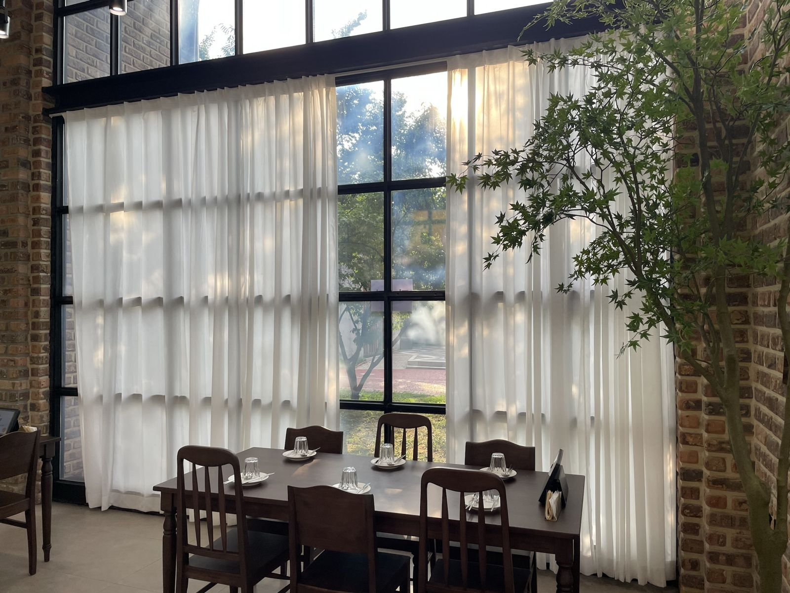
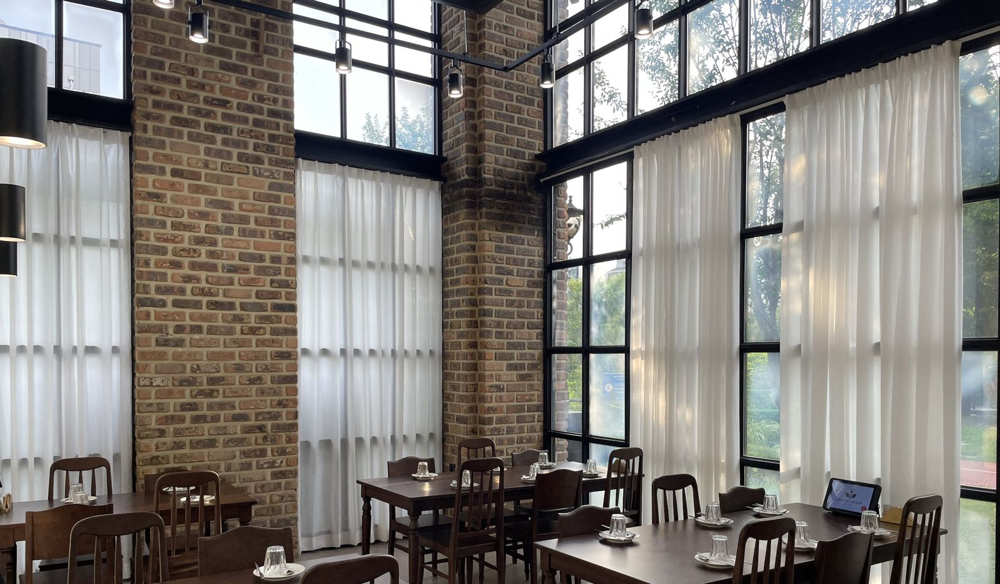

시공 내용
벽돌 벽과 높은 창이 있는 매장에 화이트 쉬폰 커튼을 시공했습니다. 바깥 풍경과 햇빛은 살리면서 손님 자리로 들어오는 직사광선만 부드럽게 걸러 줍니다.


시공 포인트
- 층고가 높은 창 길이에 맞춘 긴 기장
- 벽돌 · 원목 인테리어와 어울리는 가벼운 화이트 원단
- 창마다 나누어 달아 자리별로 여닫기 쉽게
비슷한 공간이라면
이 사례 번호(case-04)를 알려주시면 같은 구성으로 상담해 드려요.
쉬폰 커튼 자세히 보기 · 무료 방문 견적 신청